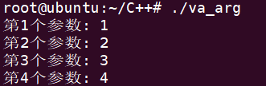
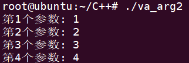

C_C++
C/C++ 语言基础
1. C/C++ 中的 volatile
https://zhuanlan.zhihu.com/p/62060524
2. unlikely和likely函数作用
https://blog.csdn.net/ludaoyi88/article/details/113832126
3. 可变参数
参考链接: https://blog.csdn.net/longintchar/article/details/85490103
3.1 什么是可变参数函数
在C/C++中有时会遇到一些参数可变的函数，例如printf()、scanf()，其函数原型为:
int printf(const char *format,...);
int scanf(const char *format,...);
就拿printf来说吧，它除了有一个参数format固定之外，后面的参数及其个数和类型都是可变的，用三个点...作为参数占位符。
3.2 参数列表的构成
任何一个可变参数的函数都可以分为两部分：固定参数和可选参数。至少要有一个固定参数，其声明与普通函数参数声明相同。可选参数由于数目不定（0个或以上），声明时用...表示。固定参数和可选参数共同构成可变参数函数的参数列表。
3.3 实现原理
C/C++中使用va_list系列变参宏实现变参函数，此处va意为variable-argumeng（可变参数）。
在stdarg.h头文件内变参宏定义如下:
stdarg.h头文件位置：
/usr/lib/gcc/x86_64-linux-gnu/9/include
typedef char * va_list;
// 把 n 圆整到 sizeof(int) 的倍数
#define _INTSIZEOF(n) ( (sizeof(n)+sizeof(int)-1) & ~(sizeof(int)-1) )
// 初始化 ap 指针，使其指向第一个可变参数。v 是变参列表的前一个参数
#define va_start(ap,v) ( ap = (va_list)&v + _INTSIZEOF(v) )
// 该宏返回当前变参值,并使 ap 指向列表中的下个变参
#define va_arg(ap, type) ( *(type *)((ap += _INTSIZEOF(type)) - _INTSIZEOF(type)) )
// /将指针 ap 置为无效，结束变参的获取
#define va_end(ap) ( ap = (va_list)0 )
_INTSIZEOF(n)_INTSIZEOF(n)宏考虑到某些系统需要内存地址对齐。从宏名看应按照sizeof(int)即栈粒度对齐，参数在内存中的地址均为sizeof(int)=4的倍数。 例如，若1<= sizeof(n) <= 4，则_INTSIZEOF(n)=4，若5 =< sizeof(n) <= 8，则`_INTSIZEOF(n)=8。va_start(ap, v)va_start宏首先根据(va_list)&v得到参数v在栈中的内存地址，加上_INTSIZEOF(v)即v所占内存大小后，使ap指向v的下一个参数。在使用的时候，一般用这个宏初始化ap指针，v是变参列表的前一个参数，即最后一个固定参数，初始化的结果是使得ap指向第一个变参。- va_arg(ap, type)
这个宏取得type类型的可变参数值。首先
ap += _INTSIZEOF(type)，即使得ap指向下一个变参的地址；然后ap - _INTSIZEOF(n)得到当前变参的内存地址，类型转换后解引用，即得到当前指向得变参得值。 va_end(ap)va_end宏使得ap不再指向有效的内存地址。该宏的某些实现定义为((void *)0)，编译时不会为其产生代码，调用与否并无区别。但某些实现中va_end宏用于在函数返回前完成一些必要的清理工作：如va_start宏可能以某种方式修改栈，导致返回操作无法完成，va_end宏可将有些修改复原；又如va_start宏可能为参数列表动态分配以便于遍历，va_end宏可释放此内存。因此，从使用va_start宏的函数中退出之前，必须调用一次va_end宏。
3.4 代码示例
变参宏无法智能识别可变参数的数目和类型，因此实现变参函数时需自行判断可变参数的数目和类型。所以我们就要想一些办法，比如
1. 显示提供变参数目或设定遍历结束条件
2. 显示提供变参类型枚举值，或固定参数中包含足够的类型信息（如printf函数通过分析format字符串即可确定各变参类型）
3. 主调函数和被调函数可约定变参的数目和类型
等等...
例1：函数通过固定参数指定可变参数的个数，打印所有变参值
#include <stdarg.h>
#include <stdio.h>
void parse_valist_by_num(int arg_cnt, ...);
int main(int argc, char *argv[])
{
int arg_cnt = 4;
int arg1 = 1;
int arg2 = 2;
int arg3 = 3;
int arg4 = 4;
parse_valist_by_num(arg_cnt, arg1, arg2, arg3,arg4);
return 0;
}
// 第一个参数定义可变参数的个数
void parse_valist_by_num(int arg_cnt, ...)
{
va_list p_args;
va_start(p_args, arg_cnt);
int idx;
int val;
for (idx = 1; idx <= arg_cnt; idx++) {
val = va_arg(p_args, int);
printf("第%d个参数: %d\n", idx, val);
}
printf("----------\n");
va_end(p_args);
}
运行结果如下所示： 
例2：函数定义一个结束标记（-1）,调用时通过最后一个参数传递该标记，打印标记前所有变参值
#include <stdarg.h>
#include <stdio.h>
// num_1表示第一个参数
// 当解析可变参数列表时遇到结束标记-1即停止解析
void parse_valist_by_flag(int num_1, ...);
int main(int argc, char *argv[])
{
int num_1 = 1;
int arg1 = 2;
int arg2 = 3;
int arg3 = 4;
int arg4 = -1;
parse_valist_by_flag(num_1, arg1, arg2, arg3, arg4);
return 0;
}
// 函数定义一个结束标记(-1)，调用时通过最后一个参数传递该标记，以结束变参的遍历打印
// 最后一个参数作为变参结束符(-1)，用于循环获取变参内容
void parse_valist_by_flag(int num_1, ...)
{
va_list p_args;
va_start(p_args, num_1);
int idx = 0;
int val = num_1;
while (val != -1) {
++idx;
printf("第%d个参数: %d\n", idx, val);
val = va_arg(p_args, int); // 得到下一个变参值
}
va_end(p_args);
}
运行结果如下所示： 
3.5 注意事项
va_arg(ap, type)宏中的type不可指定为以下类型：
- char
- short
- float
在C/C++语言中，调用不带原型声明或声明为变参的函数时，主调函数会在传递未显示声明的参数前对其执行缺省参数提升（default argumeng promotions），将提升后的参数值传递给被调函数。
提升操作如下：
- float类型的参数提升为double类型
- char、short和相应的signed、unsigned类型参数提升为int类型
- 若int类型不能容纳原值，则提升为unsigned int类型
3.6 总述图
最后来一张图，帮助理解前面讲的宏